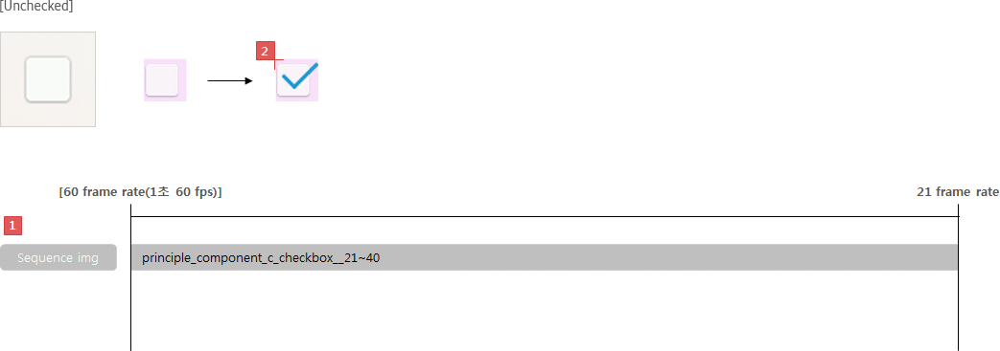
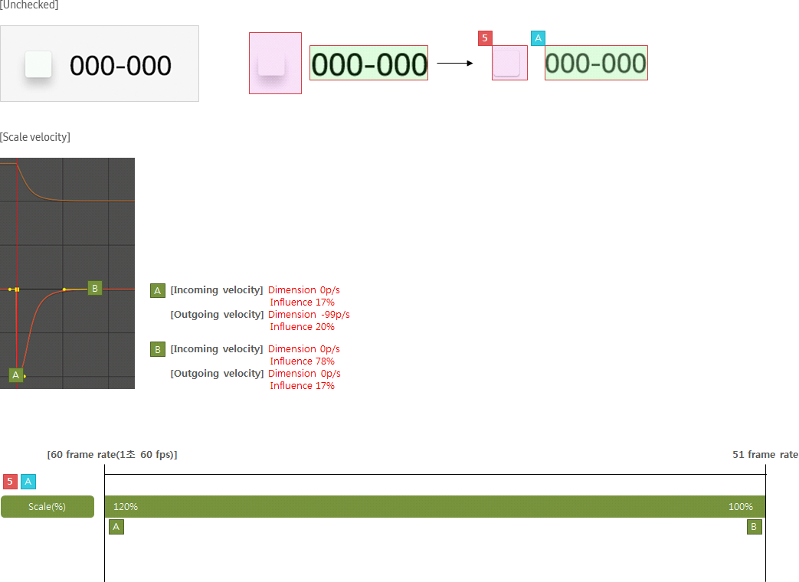

Checkbox
Definition
Usage
Interaction
Specs
C_CHECKBOX
Definition
Checkboxes allow the user to select multiple options from a set.
You can also use a checkbox to toggle the selected state of a single item.
Usage
- Use a check box to allow users to select multiple options.
- When check boxes are used, they should appear as boxes that show the selected state.
- Place the boxes to the left of the check box labels in a text list or in the top-left corners of thumbnails in a grid list.
- When a check box is selected, a check mark indicating the selected state should appear in the box.
Interaction
Specs
Properties
A check box consists of the following elements:
1. Box (
Mandatory
)
- Provide a visible box to let users know this control can be selected.
- Make a check box dimmed when it is unavailable or disabled.
2. Check mark (
Mandatory
)
- Display a check mark in the box, when it is selected.
Status
- A check box can switch between the following states:
. Normal
. Focused
. Disabled
. Disabled/Focused
- When an item is disabled, the corresponding check box should appear dimmed to show the disabled state.
- Even though a disabled check box can be focused on, it cannot be selected.
Visual
GUI
C_CHECKBOX_WHITE
C_CHECKBOX_WHITETEXT
Motion
C_CHECKBOX

C_CHECKBOX_TEXT

Download PNG Resources
*Tags :
Radio button
,
Switch
,
Basic List
,
Grid